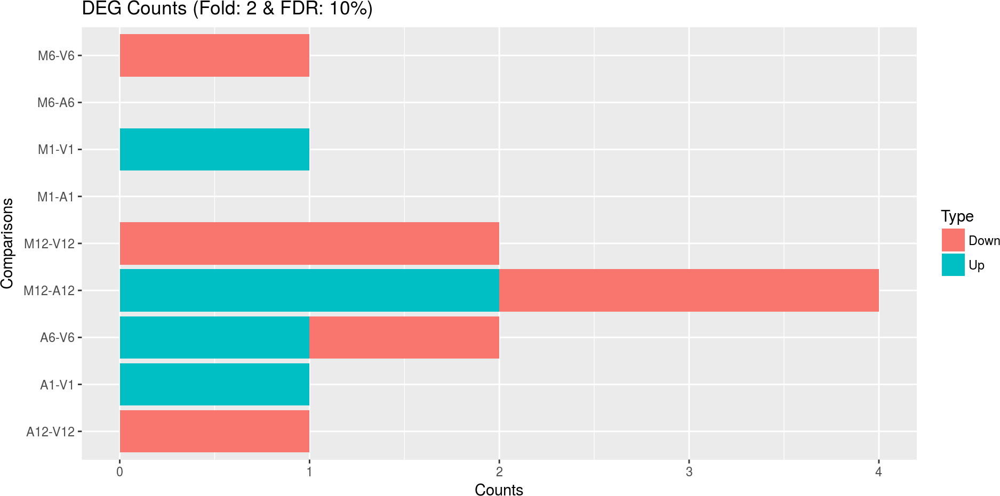
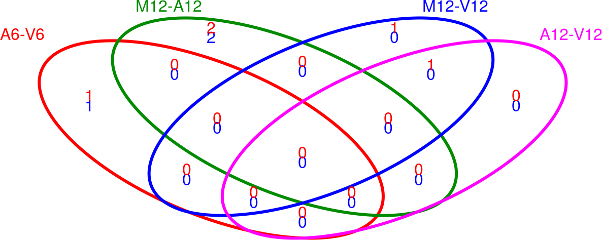

Define environment settings and samples
A typical workflow starts with generating the expected working environment
containing the proper directory structure, input files, and parameter settings.
To simplify this task, one can load one of the existing NGS workflows templates
provided by systemPipeRdata into the current working directory. The
following does this for the rnaseq template. The name of the resulting
workflow directory can be specified under the mydirname argument. The
default NULL uses the name of the chosen workflow. An error is issued if a
directory of the same name and path exists already. On Linux and OS X systems
one can also create new workflow instances from the command-line of a terminal as shown
here.
To apply workflows to custom data, the user needs to modify the targets file and if
necessary update the corresponding .cwl and .yml files. A collection of pre-generated .cwl and .yml files are provided in the param/cwl subdirectory of each workflow template. They
are also viewable in the GitHub repository of systemPipeRdata (see
here).
library(systemPipeR)
library(systemPipeRdata)
genWorkenvir(workflow = "rnaseq", mydirname = NULL)
setwd("rnaseq")
Read Preprocessing
Preprocessing with preprocessReads function
The function preprocessReads allows to apply predefined or custom
read preprocessing functions to all FASTQ files referenced in a
SYSargs2 container, such as quality filtering or adaptor trimming
routines. The paths to the resulting output FASTQ files are stored in the
output slot of the SYSargs2 object. Internally,
preprocessReads uses the FastqStreamer function from
the ShortRead package to stream through large FASTQ files in a
memory-efficient manner. The following example performs adaptor trimming with
the trimLRPatterns function from the Biostrings package.
After the trimming step a new targets file is generated (here
targets_trimPE.txt) containing the paths to the trimmed FASTQ files.
The new targets file can be used for the next workflow step with an updated
SYSargs2 instance, e.g. running the NGS alignments with the
trimmed FASTQ files.
Construct SYSargs2 object from cwl and yml param and targets files.
targetsPE <- system.file("extdata", "targetsPE.txt", package = "systemPipeR")
dir_path <- system.file("extdata/cwl/preprocessReads/trim-pe", package = "systemPipeR")
trim <- loadWorkflow(targets = targetsPE, wf_file = "trim-pe.cwl", input_file = "trim-pe.yml",
dir_path = dir_path)
trim <- renderWF(trim, inputvars = c(FileName1 = "_FASTQ_PATH1_", FileName2 = "_FASTQ_PATH2_",
SampleName = "_SampleName_"))
trim
output(trim)[1:2]
preprocessReads(args = trim, Fct = "trimLRPatterns(Rpattern='GCCCGGGTAA',
subject=fq)",
batchsize = 1e+05, overwrite = TRUE, compress = TRUE)
The following example shows how one can design a custom read preprocessing function
using utilities provided by the ShortRead package, and then run it
in batch mode with the ‘preprocessReads’ function (here on paired-end reads).
filterFct <- function(fq, cutoff = 20, Nexceptions = 0) {
qcount <- rowSums(as(quality(fq), "matrix") <= cutoff, na.rm = TRUE)
# Retains reads where Phred scores are >= cutoff with N exceptions
fq[qcount <= Nexceptions]
}
preprocessReads(args = trim, Fct = "filterFct(fq, cutoff=20, Nexceptions=0)", batchsize = 1e+05)
Preprocessing with TrimGalore!
TrimGalore! is a wrapper tool to consistently apply quality and adapter trimming to fastq files, with some extra functionality for removing Reduced Representation Bisulfite-Seq (RRBS) libraries.
targets <- system.file("extdata", "targets.txt", package = "systemPipeR")
dir_path <- system.file("extdata/cwl/trim_galore/trim_galore-se", package = "systemPipeR")
trimG <- loadWorkflow(targets = targets, wf_file = "trim_galore-se.cwl", input_file = "trim_galore-se.yml",
dir_path = dir_path)
trimG <- renderWF(trimG, inputvars = c(FileName = "_FASTQ_PATH1_", SampleName = "_SampleName_"))
trimG
cmdlist(trimG)[1:2]
output(trimG)[1:2]
## Run Single Machine Option
trimG <- runCommandline(trimG[1], make_bam = FALSE)
Preprocessing with Trimmomatic
targetsPE <- system.file("extdata", "targetsPE.txt", package = "systemPipeR")
dir_path <- system.file("extdata/cwl/trimmomatic/trimmomatic-pe", package = "systemPipeR")
trimM <- loadWorkflow(targets = targetsPE, wf_file = "trimmomatic-pe.cwl", input_file = "trimmomatic-pe.yml",
dir_path = dir_path)
trimM <- renderWF(trimM, inputvars = c(FileName1 = "_FASTQ_PATH1_", FileName2 = "_FASTQ_PATH2_",
SampleName = "_SampleName_"))
trimM
cmdlist(trimM)[1:2]
output(trimM)[1:2]
## Run Single Machine Option
trimM <- runCommandline(trimM[1], make_bam = FALSE)
FASTQ quality report
The following seeFastq and seeFastqPlot functions generate and plot a series of
useful quality statistics for a set of FASTQ files including per cycle quality
box plots, base proportions, base-level quality trends, relative k-mer
diversity, length and occurrence distribution of reads, number of reads above
quality cutoffs and mean quality distribution.
The function seeFastq computes the quality statistics and stores the results in a
relatively small list object that can be saved to disk with save() and
reloaded with load() for later plotting. The argument klength specifies the
k-mer length and batchsize the number of reads to a random sample from each
FASTQ file.
fqlist <- seeFastq(fastq = infile1(trim), batchsize = 10000, klength = 8)
pdf("./results/fastqReport.pdf", height = 18, width = 4 * length(fqlist))
seeFastqPlot(fqlist)
dev.off()

Parallelization of FASTQ quality report on a single machine with multiple cores.
f <- function(x) seeFastq(fastq = infile1(trim)[x], batchsize = 1e+05, klength = 8)
fqlist <- bplapply(seq(along = trim), f, BPPARAM = MulticoreParam(workers = 4))
seeFastqPlot(unlist(fqlist, recursive = FALSE))
Parallelization of FASTQ quality report via scheduler (e.g. Slurm) across several compute nodes.
library(BiocParallel)
library(batchtools)
f <- function(x) {
library(systemPipeR)
targetsPE <- system.file("extdata", "targetsPE.txt", package = "systemPipeR")
dir_path <- system.file("extdata/cwl/preprocessReads/trim-pe", package = "systemPipeR")
trim <- loadWorkflow(targets = targetsPE, wf_file = "trim-pe.cwl", input_file = "trim-pe.yml",
dir_path = dir_path)
trim <- renderWF(trim, inputvars = c(FileName1 = "_FASTQ_PATH1_", FileName2 = "_FASTQ_PATH2_",
SampleName = "_SampleName_"))
seeFastq(fastq = infile1(trim)[x], batchsize = 1e+05, klength = 8)
}
resources <- list(walltime = 120, ntasks = 1, ncpus = 4, memory = 1024)
param <- BatchtoolsParam(workers = 4, cluster = "slurm", template = "batchtools.slurm.tmpl",
resources = resources)
fqlist <- bplapply(seq(along = trim), f, BPPARAM = param)
seeFastqPlot(unlist(fqlist, recursive = FALSE))
NGS Alignment software
After quality control, the sequence reads can be aligned to a reference genome or transcriptome database. The following sessions present some NGS sequence alignment software. Select the most accurate aligner and determining the optimal parameter for your custom data set project.
For all the following examples, it is necessary to install the respective software
and export the PATH accordingly. If it is available Environment Module
in the system, you can load all the request software with moduleload(args) function.
Alignment with HISAT2 using SYSargs2
The following steps will demonstrate how to use the short read aligner Hisat2
(Kim et al., 2015) in both interactive job submissions and batch submissions to
queuing systems of clusters using the systemPipeR's new CWL command-line interface.
The parameter settings of the aligner are defined in the hisat2-mapping-se.cwl
and hisat2-mapping-se.yml files. The following shows how to construct the
corresponding SYSargs2 object, here args.
targets <- system.file("extdata", "targets.txt", package = "systemPipeR")
dir_path <- system.file("extdata/cwl/hisat2/hisat2-se", package = "systemPipeR")
args <- loadWorkflow(targets = targets, wf_file = "hisat2-mapping-se.cwl", input_file = "hisat2-mapping-se.yml",
dir_path = dir_path)
args <- renderWF(args, inputvars = c(FileName = "_FASTQ_PATH1_", SampleName = "_SampleName_"))
args
## Instance of 'SYSargs2':
## Slot names/accessors:
## targets: 18 (M1A...V12B), targetsheader: 4 (lines)
## modules: 1
## wf: 0, clt: 1, yamlinput: 7 (components)
## input: 18, output: 18
## cmdlist: 18
## WF Steps:
## 1. hisat2-mapping-se (rendered: TRUE)
cmdlist(args)[1:2]
## $M1A
## $M1A$`hisat2-mapping-se`
## [1] "hisat2 -S ./results/M1A.sam -x ./data/tair10.fasta -k 1 --min-intronlen 30 --max-intronlen 3000 -U ./data/SRR446027_1.fastq.gz --threads 4"
##
##
## $M1B
## $M1B$`hisat2-mapping-se`
## [1] "hisat2 -S ./results/M1B.sam -x ./data/tair10.fasta -k 1 --min-intronlen 30 --max-intronlen 3000 -U ./data/SRR446028_1.fastq.gz --threads 4"
output(args)[1:2]
## $M1A
## $M1A$`hisat2-mapping-se`
## [1] "./results/M1A.sam"
##
##
## $M1B
## $M1B$`hisat2-mapping-se`
## [1] "./results/M1B.sam"
Subsetting SYSargs2 class slots for each workflow step.
subsetWF(args, slot = "input", subset = "FileName")[1:2] ## Subsetting the input files for this particular workflow
## M1A M1B
## "./data/SRR446027_1.fastq.gz" "./data/SRR446028_1.fastq.gz"
subsetWF(args, slot = "output", subset = 1, index = 1)[1:2] ## Subsetting the output files for one particular step in the workflow
## M1A M1B
## "./results/M1A.sam" "./results/M1B.sam"
subsetWF(args, slot = "step", subset = 1)[1] ## Subsetting the command-lines for one particular step in the workflow
## M1A
## "hisat2 -S ./results/M1A.sam -x ./data/tair10.fasta -k 1 --min-intronlen 30 --max-intronlen 3000 -U ./data/SRR446027_1.fastq.gz --threads 4"
subsetWF(args, slot = "output", subset = 1, index = 1, delete = TRUE)[1] ## DELETING specific output files
## The subset cannot be deleted: no such file
## M1A
## "./results/M1A.sam"
Build Hisat2 index.
dir_path <- system.file("extdata/cwl/hisat2/hisat2-idx", package = "systemPipeR")
idx <- loadWorkflow(targets = NULL, wf_file = "hisat2-index.cwl", input_file = "hisat2-index.yml",
dir_path = dir_path)
idx <- renderWF(idx)
idx
cmdlist(idx)
## Run
runCommandline(idx, make_bam = FALSE)
Interactive job submissions in a single machine
To simplify the short read alignment execution for the user, the command-line
can be run with the runCommandline function.
The execution will be on a single machine without submitting to a queuing system
of a computer cluster. This way, the input FASTQ files will be processed sequentially.
By default runCommandline auto detects SAM file outputs and converts them
to sorted and indexed BAM files, using internally the Rsamtools package
(Martin Morgan et al., 2019). Besides, runCommandline allows the user to create a dedicated
results folder for each workflow and a sub-folder for each sample
defined in the targets file. This includes all the output and log files for each
step. When these options are used, the output location will be updated by default
and can be assigned to the same object.
runCommandline(args, make_bam = FALSE) ## generates alignments and writes *.sam files to ./results folder
args <- runCommandline(args, make_bam = TRUE) ## same as above but writes files and converts *.sam files to sorted and indexed BAM files. Assigning the new extention of the output files to the object args.
If available, multiple CPU cores can be used for processing each file. The number
of CPU cores (here 4) to use for each process is defined in the *.yml file.
With yamlinput(args)['thread'] one can return this value from the SYSargs2 object.
Parallelization on clusters
Alternatively, the computation can be greatly accelerated by processing many files
in parallel using several compute nodes of a cluster, where a scheduling/queuing
system is used for load balancing. For this the clusterRun function submits
the computing requests to the scheduler using the run specifications
defined by runCommandline.
To avoid over-subscription of CPU cores on the compute nodes, the value from
yamlinput(args)['thread'] is passed on to the submission command, here ncpus
in the resources list object. The number of independent parallel cluster
processes is defined under the Njobs argument. The following example will run
18 processes in parallel using for each 4 CPU cores. If the resources available
on a cluster allow running all 18 processes at the same time then the shown sample
submission will utilize in total 72 CPU cores. Note, clusterRun can be used
with most queueing systems as it is based on utilities from the batchtools
package which supports the use of template files (*.tmpl) for defining the
run parameters of different schedulers. To run the following code, one needs to
have both a conf file (see .batchtools.conf.R samples here)
and a template file (see *.tmpl samples here)
for the queueing available on a system. The following example uses the sample
conf and template files for the Slurm scheduler provided by this package.
library(batchtools)
resources <- list(walltime = 120, ntasks = 1, ncpus = 4, memory = 1024)
reg <- clusterRun(args, FUN = runCommandline, more.args = list(args = args, make_bam = TRUE,
dir = FALSE), conffile = ".batchtools.conf.R", template = "batchtools.slurm.tmpl",
Njobs = 18, runid = "01", resourceList = resources)
getStatus(reg = reg)
waitForJobs(reg = reg)
Check and update the output location if necessary.
args <- output_update(args, dir = FALSE, replace = TRUE, extension = c(".sam", ".bam")) ## Updates the output(args) to the right location in the subfolders
output(args)
Create new targets file
To establish the connectivity to the next workflow step, one can write a new
targets file with the writeTargetsout function. The new targets file
serves as input to the next loadWorkflow and renderWF call.
names(clt(args))
writeTargetsout(x = args, file = "default", step = 1, new_col = "FileName", new_col_output_index = 1,
overwrite = TRUE)
Alignment with HISAT2 and SAMtools
Alternatively, it possible to build an workflow with HISAT2 and SAMtools.
targets <- system.file("extdata", "targets.txt", package = "systemPipeR")
dir_path <- system.file("extdata/cwl/workflow-hisat2/workflow-hisat2-se", package = "systemPipeR")
WF <- loadWorkflow(targets = targets, wf_file = "workflow_hisat2-se.cwl", input_file = "workflow_hisat2-se.yml",
dir_path = dir_path)
WF <- renderWF(WF, inputvars = c(FileName = "_FASTQ_PATH1_", SampleName = "_SampleName_"))
WF
cmdlist(WF)[1:2]
output(WF)[1:2]
Alignment with Tophat2
The NGS reads of this project can also be aligned against the reference genome
sequence using Bowtie2/TopHat2 (Kim et al., 2013; Langmead et al., 2012).
Build Bowtie2 index.
dir_path <- system.file("extdata/cwl/bowtie2/bowtie2-idx", package = "systemPipeR")
idx <- loadWorkflow(targets = NULL, wf_file = "bowtie2-index.cwl", input_file = "bowtie2-index.yml",
dir_path = dir_path)
idx <- renderWF(idx)
idx
cmdlist(idx)
## Run in single machine
runCommandline(idx, make_bam = FALSE)
The parameter settings of the aligner are defined in the tophat2-mapping-pe.cwl
and tophat2-mapping-pe.yml files. The following shows how to construct the
corresponding SYSargs2 object, here tophat2PE.
targetsPE <- system.file("extdata", "targetsPE.txt", package = "systemPipeR")
dir_path <- system.file("extdata/cwl/tophat2/tophat2-pe", package = "systemPipeR")
tophat2PE <- loadWorkflow(targets = targetsPE, wf_file = "tophat2-mapping-pe.cwl",
input_file = "tophat2-mapping-pe.yml", dir_path = dir_path)
tophat2PE <- renderWF(tophat2PE, inputvars = c(FileName1 = "_FASTQ_PATH1_", FileName2 = "_FASTQ_PATH2_",
SampleName = "_SampleName_"))
tophat2PE
cmdlist(tophat2PE)[1:2]
output(tophat2PE)[1:2]
## Run in single machine
tophat2PE <- runCommandline(tophat2PE[1], make_bam = TRUE)
Parallelization on clusters.
resources <- list(walltime = 120, ntasks = 1, ncpus = 4, memory = 1024)
reg <- clusterRun(tophat2PE, FUN = runCommandline, more.args = list(args = tophat2PE,
make_bam = TRUE, dir = FALSE), conffile = ".batchtools.conf.R", template = "batchtools.slurm.tmpl",
Njobs = 18, runid = "01", resourceList = resources)
waitForJobs(reg = reg)
Create new targets file
names(clt(tophat2PE))
writeTargetsout(x = tophat2PE, file = "default", step = 1, new_col = "tophat2PE",
new_col_output_index = 1, overwrite = TRUE)
Alignment with Bowtie2 (e.g. for miRNA profiling)
The following example runs Bowtie2 as a single process without submitting it to a cluster.
Building the index:
dir_path <- system.file("extdata/cwl/bowtie2/bowtie2-idx", package = "systemPipeR")
idx <- loadWorkflow(targets = NULL, wf_file = "bowtie2-index.cwl", input_file = "bowtie2-index.yml",
dir_path = dir_path)
idx <- renderWF(idx)
idx
cmdlist(idx)
## Run in single machine
runCommandline(idx, make_bam = FALSE)
Building all the command-line:
targetsPE <- system.file("extdata", "targetsPE.txt", package = "systemPipeR")
dir_path <- system.file("extdata/cwl/bowtie2/bowtie2-pe", package = "systemPipeR")
bowtiePE <- loadWorkflow(targets = targetsPE, wf_file = "bowtie2-mapping-pe.cwl",
input_file = "bowtie2-mapping-pe.yml", dir_path = dir_path)
bowtiePE <- renderWF(bowtiePE, inputvars = c(FileName1 = "_FASTQ_PATH1_", FileName2 = "_FASTQ_PATH2_",
SampleName = "_SampleName_"))
bowtiePE
cmdlist(bowtiePE)[1:2]
output(bowtiePE)[1:2]
Running all the jobs to computing nodes.
resources <- list(walltime = 120, ntasks = 1, ncpus = 4, memory = 1024)
reg <- clusterRun(bowtiePE, FUN = runCommandline, more.args = list(args = bowtiePE,
dir = FALSE), conffile = ".batchtools.conf.R", template = "batchtools.slurm.tmpl",
Njobs = 18, runid = "01", resourceList = resources)
getStatus(reg = reg)
Alternatively, it possible to run all the jobs in a single machine.
bowtiePE <- runCommandline(bowtiePE)
Create new targets file.
names(clt(bowtiePE))
writeTargetsout(x = bowtiePE, file = "default", step = 1, new_col = "bowtiePE", new_col_output_index = 1,
overwrite = TRUE)
Alignment with BWA-MEM (e.g. for VAR-Seq)
The following example runs BWA-MEM as a single process without submitting it to a cluster. ##TODO: add reference
Build the index:
dir_path <- system.file("extdata/cwl/bwa/bwa-idx", package = "systemPipeR")
idx <- loadWorkflow(targets = NULL, wf_file = "bwa-index.cwl", input_file = "bwa-index.yml",
dir_path = dir_path)
idx <- renderWF(idx)
idx
cmdlist(idx) # Indexes reference genome
## Run
runCommandline(idx, make_bam = FALSE)
Running the alignment:
targetsPE <- system.file("extdata", "targetsPE.txt", package = "systemPipeR")
dir_path <- system.file("extdata/cwl/bwa/bwa-pe", package = "systemPipeR")
bwaPE <- loadWorkflow(targets = targetsPE, wf_file = "bwa-pe.cwl", input_file = "bwa-pe.yml",
dir_path = dir_path)
bwaPE <- renderWF(bwaPE, inputvars = c(FileName1 = "_FASTQ_PATH1_", FileName2 = "_FASTQ_PATH2_",
SampleName = "_SampleName_"))
bwaPE
cmdlist(bwaPE)[1:2]
output(bwaPE)[1:2]
## Single Machine
bwaPE <- runCommandline(args = bwaPE, make_bam = FALSE)
## Cluster
library(batchtools)
resources <- list(walltime = 120, ntasks = 1, ncpus = 4, memory = 1024)
reg <- clusterRun(bwaPE, FUN = runCommandline, more.args = list(args = bwaPE, dir = FALSE),
conffile = ".batchtools.conf.R", template = "batchtools.slurm.tmpl", Njobs = 18,
runid = "01", resourceList = resources)
getStatus(reg = reg)
Create new targets file.
names(clt(bwaPE))
writeTargetsout(x = bwaPE, file = "default", step = 1, new_col = "bwaPE", new_col_output_index = 1,
overwrite = TRUE)
Alignment with Rsubread (e.g. for RNA-Seq)
The following example shows how one can use within the \Rpackage{systemPipeR} environment the R-based aligner \Rpackage{Rsubread}, allowing running from R or command-line.
## Build the index:
dir_path <- system.file("extdata/cwl/rsubread/rsubread-idx", package = "systemPipeR")
idx <- loadWorkflow(targets = NULL, wf_file = "rsubread-index.cwl", input_file = "rsubread-index.yml",
dir_path = dir_path)
idx <- renderWF(idx)
idx
cmdlist(idx)
runCommandline(args = idx, make_bam = FALSE)
## Running the alignment:
targets <- system.file("extdata", "targets.txt", package = "systemPipeR")
dir_path <- system.file("extdata/cwl/rsubread/rsubread-se", package = "systemPipeR")
rsubread <- loadWorkflow(targets = targets, wf_file = "rsubread-mapping-se.cwl",
input_file = "rsubread-mapping-se.yml", dir_path = dir_path)
rsubread <- renderWF(rsubread, inputvars = c(FileName = "_FASTQ_PATH1_", SampleName = "_SampleName_"))
rsubread
cmdlist(rsubread)[1]
## Single Machine
rsubread <- runCommandline(args = rsubread[1])
Create new targets file.
names(clt(rsubread))
writeTargetsout(x = rsubread, file = "default", step = 1, new_col = "rsubread", new_col_output_index = 1,
overwrite = TRUE)
Alignment with gsnap (e.g. for VAR-Seq and RNA-Seq)
Another R-based short read aligner is gsnap from the gmapR package (Wu et al., 2010).
The code sample below introduces how to run this aligner on multiple nodes of a compute cluster.
## Build the index:
dir_path <- system.file("extdata/cwl/gsnap/gsnap-idx", package = "systemPipeR")
idx <- loadWorkflow(targets = NULL, wf_file = "gsnap-index.cwl", input_file = "gsnap-index.yml",
dir_path = dir_path)
idx <- renderWF(idx)
idx
cmdlist(idx)
runCommandline(args = idx, make_bam = FALSE)
## Running the alignment:
targetsPE <- system.file("extdata", "targetsPE.txt", package = "systemPipeR")
dir_path <- system.file("extdata/cwl/gsnap/gsnap-pe", package = "systemPipeR")
gsnap <- loadWorkflow(targets = targetsPE, wf_file = "gsnap-mapping-pe.cwl", input_file = "gsnap-mapping-pe.yml",
dir_path = dir_path)
gsnap <- renderWF(gsnap, inputvars = c(FileName1 = "_FASTQ_PATH1_", FileName2 = "_FASTQ_PATH2_",
SampleName = "_SampleName_"))
gsnap
cmdlist(gsnap)[1]
output(gsnap)[1]
## Cluster
library(batchtools)
resources <- list(walltime = 120, ntasks = 1, ncpus = 4, memory = 1024)
reg <- clusterRun(gsnap, FUN = runCommandline, more.args = list(args = gsnap, make_bam = FALSE),
conffile = ".batchtools.conf.R", template = "batchtools.slurm.tmpl", Njobs = 18,
runid = "01", resourceList = resources)
getStatus(reg = reg)
gsnap <- output_update(gsnap, dir = FALSE, replace = TRUE, extension = c(".sam",
".bam"))
Create new targets file.
names(clt(gsnap))
writeTargetsout(x = gsnap, file = "default", step = 1, new_col = "gsnap", new_col_output_index = 1,
overwrite = TRUE)
Create symbolic links for viewing BAM files in IGV
The genome browser IGV supports reading of indexed/sorted BAM files via web URLs. This way it can be avoided to create unnecessary copies of these large files. To enable this approach, an HTML directory with Http access needs to be available in the user account (e.g. home/publichtml) of a system. If this is not the case then the BAM files need to be moved or copied to the system where IGV runs. In the following, htmldir defines the path to the HTML directory with http access where the symbolic links to the BAM files will be stored. The corresponding URLs will be written to a text file specified under the _urlfile_ argument.
symLink2bam(sysargs = args, htmldir = c("~/.html/", "somedir/"), urlbase = "http://myserver.edu/~username/",
urlfile = "IGVurl.txt")
Read counting for mRNA profiling experiments
Create txdb (needs to be done only once).
library(GenomicFeatures)
txdb <- makeTxDbFromGFF(file = "data/tair10.gff", format = "gff", dataSource = "TAIR",
organism = "Arabidopsis thaliana")
saveDb(txdb, file = "./data/tair10.sqlite")
The following performs read counting with summarizeOverlaps in parallel mode with multiple cores.
library(BiocParallel)
txdb <- loadDb("./data/tair10.sqlite")
eByg <- exonsBy(txdb, by = "gene")
outpaths <- subsetWF(args, slot = "output", subset = 1, index = 1)
bfl <- BamFileList(outpaths, yieldSize = 50000, index = character())
multicoreParam <- MulticoreParam(workers = 4)
register(multicoreParam)
registered()
counteByg <- bplapply(bfl, function(x) summarizeOverlaps(eByg, x, mode = "Union",
ignore.strand = TRUE, inter.feature = TRUE, singleEnd = TRUE))
# Note: for strand-specific RNA-Seq set 'ignore.strand=FALSE' and for PE data set
# 'singleEnd=FALSE'
countDFeByg <- sapply(seq(along = counteByg), function(x) assays(counteByg[[x]])$counts)
rownames(countDFeByg) <- names(rowRanges(counteByg[[1]]))
colnames(countDFeByg) <- names(bfl)
rpkmDFeByg <- apply(countDFeByg, 2, function(x) returnRPKM(counts = x, ranges = eByg))
write.table(countDFeByg, "results/countDFeByg.xls", col.names = NA, quote = FALSE,
sep = "\t")
write.table(rpkmDFeByg, "results/rpkmDFeByg.xls", col.names = NA, quote = FALSE,
sep = "\t")
Please note, in addition to read counts this step generates RPKM normalized expression values. For most statistical differential expression or abundance analysis methods, such as edgeR or DESeq2, the raw count values should be used as input. The usage of RPKM values should be restricted to specialty applications required by some users, e.g. manually comparing the expression levels of different genes or features.
Read counting with summarizeOverlaps using multiple nodes of a cluster.
library(BiocParallel)
f <- function(x) {
library(systemPipeR)
library(BiocParallel)
library(GenomicFeatures)
txdb <- loadDb("./data/tair10.sqlite")
eByg <- exonsBy(txdb, by = "gene")
args <- systemArgs(sysma = "param/tophat.param", mytargets = "targets.txt")
outpaths <- subsetWF(args, slot = "output", subset = 1, index = 1)
bfl <- BamFileList(outpaths, yieldSize = 50000, index = character())
summarizeOverlaps(eByg, bfl[x], mode = "Union", ignore.strand = TRUE, inter.feature = TRUE,
singleEnd = TRUE)
}
resources <- list(walltime = 120, ntasks = 1, ncpus = 4, memory = 1024)
param <- BatchtoolsParam(workers = 4, cluster = "slurm", template = "batchtools.slurm.tmpl",
resources = resources)
counteByg <- bplapply(seq(along = args), f, BPPARAM = param)
countDFeByg <- sapply(seq(along = counteByg), function(x) assays(counteByg[[x]])$counts)
rownames(countDFeByg) <- names(rowRanges(counteByg[[1]]))
colnames(countDFeByg) <- names(outpaths)
Useful commands for monitoring the progress of submitted jobs
getStatus(reg = reg)
outpaths <- subsetWF(args, slot = "output", subset = 1, index = 1)
file.exists(outpaths)
sapply(1:length(outpaths), function(x) loadResult(reg, id = x)) # Works after job completion
Read and alignment count stats
Generate a table of read and alignment counts for all samples.
read_statsDF <- alignStats(args)
write.table(read_statsDF, "results/alignStats.xls", row.names = FALSE, quote = FALSE,
sep = "\t")
The following shows the first four lines of the sample alignment stats file
provided by the systemPipeR package. For simplicity the number of PE reads
is multiplied here by 2 to approximate proper alignment frequencies where each
read in a pair is counted.
read.table(system.file("extdata", "alignStats.xls", package = "systemPipeR"), header = TRUE)[1:4,
]
## FileName Nreads2x Nalign Perc_Aligned Nalign_Primary Perc_Aligned_Primary
## 1 M1A 192918 177961 92.24697 177961 92.24697
## 2 M1B 197484 159378 80.70426 159378 80.70426
## 3 A1A 189870 176055 92.72397 176055 92.72397
## 4 A1B 188854 147768 78.24457 147768 78.24457
Parallelization of read/alignment stats on single machine with multiple cores.
f <- function(x) alignStats(args[x])
read_statsList <- bplapply(seq(along = args), f, BPPARAM = MulticoreParam(workers = 8))
read_statsDF <- do.call("rbind", read_statsList)
Parallelization of read/alignment stats via scheduler (e.g. Slurm) across several compute nodes.
library(BiocParallel)
library(batchtools)
f <- function(x) {
library(systemPipeR)
targets <- system.file("extdata", "targets.txt", package = "systemPipeR")
dir_path <- "param/cwl/hisat2/hisat2-se" ## TODO: replace path to system.file
args <- loadWorkflow(targets = targets, wf_file = "hisat2-mapping-se.cwl", input_file = "hisat2-mapping-se.yml",
dir_path = dir_path)
args <- renderWF(args, inputvars = c(FileName = "_FASTQ_PATH1_", SampleName = "_SampleName_"))
args <- output_update(args, dir = FALSE, replace = TRUE, extension = c(".sam",
".bam"))
alignStats(args[x])
}
resources <- list(walltime = 120, ntasks = 1, ncpus = 4, memory = 1024)
param <- BatchtoolsParam(workers = 4, cluster = "slurm", template = "batchtools.slurm.tmpl",
resources = resources)
read_statsList <- bplapply(seq(along = args), f, BPPARAM = param)
read_statsDF <- do.call("rbind", read_statsList)
Read counting for miRNA profiling experiments
Download miRNA genes from miRBase.
system("wget ftp://mirbase.org/pub/mirbase/19/genomes/My_species.gff3 -P ./data/")
gff <- import.gff("./data/My_species.gff3")
gff <- split(gff, elementMetadata(gff)$ID)
bams <- names(bampaths)
names(bams) <- targets$SampleName
bfl <- BamFileList(bams, yieldSize = 50000, index = character())
countDFmiR <- summarizeOverlaps(gff, bfl, mode = "Union", ignore.strand = FALSE,
inter.feature = FALSE) # Note: inter.feature=FALSE important since pre and mature miRNA ranges overlap
rpkmDFmiR <- apply(countDFmiR, 2, function(x) returnRPKM(counts = x, gffsub = gff))
write.table(assays(countDFmiR)$counts, "results/countDFmiR.xls", col.names = NA,
quote = FALSE, sep = "\t")
write.table(rpkmDFmiR, "results/rpkmDFmiR.xls", col.names = NA, quote = FALSE, sep = "\t")
Correlation analysis of samples
The following computes the sample-wise Spearman correlation coefficients from the rlog (regularized-logarithm) transformed expression values generated with the DESeq2 package. After transformation to a distance matrix, hierarchical clustering is performed with the hclust function and the result is plotted as a dendrogram (sample_tree.pdf).
library(DESeq2, warn.conflicts = FALSE, quietly = TRUE)
library(ape, warn.conflicts = FALSE)
countDFpath <- system.file("extdata", "countDFeByg.xls", package = "systemPipeR")
countDF <- as.matrix(read.table(countDFpath))
colData <- data.frame(row.names = targets.as.df(targets(args))$SampleName, condition = targets.as.df(targets(args))$Factor)
dds <- DESeqDataSetFromMatrix(countData = countDF, colData = colData, design = ~condition)
d <- cor(assay(rlog(dds)), method = "spearman")
hc <- hclust(dist(1 - d))
plot.phylo(as.phylo(hc), type = "p", edge.col = 4, edge.width = 3, show.node.label = TRUE,
no.margin = TRUE)
Alternatively, the clustering can be performed with RPKM normalized expression values. In combination with Spearman correlation the results of the two clustering methods are often relatively similar.
rpkmDFeBygpath <- system.file("extdata", "rpkmDFeByg.xls", package = "systemPipeR")
rpkmDFeByg <- read.table(rpkmDFeBygpath, check.names = FALSE)
rpkmDFeByg <- rpkmDFeByg[rowMeans(rpkmDFeByg) > 50, ]
d <- cor(rpkmDFeByg, method = "spearman")
hc <- hclust(as.dist(1 - d))
plot.phylo(as.phylo(hc), type = "p", edge.col = "blue", edge.width = 2, show.node.label = TRUE,
no.margin = TRUE)
DEG analysis with edgeR
The following run_edgeR function is a convenience wrapper for
identifying differentially expressed genes (DEGs) in batch mode with
edgeR’s GML method (Robinson et al., 2010) for any number of
pairwise sample comparisons specified under the cmp argument. Users
are strongly encouraged to consult the
edgeR vignette
for more detailed information on this topic and how to properly run edgeR
on data sets with more complex experimental designs.
targets <- read.delim(targetspath, comment = "#")
cmp <- readComp(file = targetspath, format = "matrix", delim = "-")
cmp[[1]]
## [,1] [,2]
## [1,] "M1" "A1"
## [2,] "M1" "V1"
## [3,] "A1" "V1"
## [4,] "M6" "A6"
## [5,] "M6" "V6"
## [6,] "A6" "V6"
## [7,] "M12" "A12"
## [8,] "M12" "V12"
## [9,] "A12" "V12"
countDFeBygpath <- system.file("extdata", "countDFeByg.xls", package = "systemPipeR")
countDFeByg <- read.delim(countDFeBygpath, row.names = 1)
edgeDF <- run_edgeR(countDF = countDFeByg, targets = targets, cmp = cmp[[1]], independent = FALSE,
mdsplot = "")
## Disp = 0.21829 , BCV = 0.4672
Filter and plot DEG results for up and down-regulated genes. Because of the small size of the toy data set used by this vignette, the FDR value has been set to a relatively high threshold (here 10%). More commonly used FDR cutoffs are 1% or 5%. The definition of ‘up’ and ‘down’ is given in the corresponding help file. To open it, type ?filterDEGs in the R console.
DEG_list <- filterDEGs(degDF = edgeDF, filter = c(Fold = 2, FDR = 10))

names(DEG_list)
## [1] "UporDown" "Up" "Down" "Summary"
DEG_list$Summary[1:4, ]
## Comparisons Counts_Up_or_Down Counts_Up Counts_Down
## M1-A1 M1-A1 0 0 0
## M1-V1 M1-V1 1 1 0
## A1-V1 A1-V1 1 1 0
## M6-A6 M6-A6 0 0 0
DEG analysis with DESeq2
The following run_DESeq2 function is a convenience wrapper for
identifying DEGs in batch mode with DESeq2 (Love et al., 2014) for any number of
pairwise sample comparisons specified under the cmp argument. Users
are strongly encouraged to consult the
DESeq2 vignette
for more detailed information on this topic and how to properly run DESeq2
on data sets with more complex experimental designs.
degseqDF <- run_DESeq2(countDF = countDFeByg, targets = targets, cmp = cmp[[1]],
independent = FALSE)
Filter and plot DEG results for up and down-regulated genes.
DEG_list2 <- filterDEGs(degDF = degseqDF, filter = c(Fold = 2, FDR = 10))

Venn Diagrams
The function overLapper can compute Venn intersects for large numbers of sample sets (up to 20 or more) and vennPlot can plot 2-5 way Venn diagrams. A useful feature is the possibility to combine the counts from several Venn comparisons with the same number of sample sets in a single Venn diagram (here for 4 up and down DEG sets).
vennsetup <- overLapper(DEG_list$Up[6:9], type = "vennsets")
vennsetdown <- overLapper(DEG_list$Down[6:9], type = "vennsets")
vennPlot(list(vennsetup, vennsetdown), mymain = "", mysub = "", colmode = 2, ccol = c("blue",
"red"))

GO term enrichment analysis of DEGs
Obtain gene-to-GO mappings
The following shows how to obtain gene-to-GO mappings from biomaRt (here for A. thaliana) and how to organize them for the downstream GO term enrichment analysis. Alternatively, the gene-to-GO mappings can be obtained for many organisms from Bioconductor’s *.db genome annotation packages or GO annotation files provided by various genome databases. For each annotation, this relatively slow preprocessing step needs to be performed only once. Subsequently, the preprocessed data can be loaded with the load function as shown in the next subsection.
library("biomaRt")
listMarts() # To choose BioMart database
listMarts(host = "plants.ensembl.org")
m <- useMart("plants_mart", host = "plants.ensembl.org")
listDatasets(m)
m <- useMart("plants_mart", dataset = "athaliana_eg_gene", host = "plants.ensembl.org")
listAttributes(m) # Choose data types you want to download
go <- getBM(attributes = c("go_id", "tair_locus", "namespace_1003"), mart = m)
go <- go[go[, 3] != "", ]
go[, 3] <- as.character(go[, 3])
go[go[, 3] == "molecular_function", 3] <- "F"
go[go[, 3] == "biological_process", 3] <- "P"
go[go[, 3] == "cellular_component", 3] <- "C"
go[1:4, ]
dir.create("./data/GO")
write.table(go, "data/GO/GOannotationsBiomart_mod.txt", quote = FALSE, row.names = FALSE,
col.names = FALSE, sep = "\t")
catdb <- makeCATdb(myfile = "data/GO/GOannotationsBiomart_mod.txt", lib = NULL, org = "",
colno = c(1, 2, 3), idconv = NULL)
save(catdb, file = "data/GO/catdb.RData")
Batch GO term enrichment analysis
Apply the enrichment analysis to the DEG sets obtained in the above differential expression analysis. Note, in the following example the FDR filter is set here to an unreasonably high value, simply because of the small size of the toy data set used in this vignette. Batch enrichment analysis of many gene sets is performed with the GOCluster_Report function. When method="all", it returns all GO terms passing the p-value cutoff specified under the cutoff arguments. When method="slim", it returns only the GO terms specified under the myslimv argument. The given example shows how one can obtain such a GO slim vector from BioMart for a specific organism.
load("data/GO/catdb.RData")
DEG_list <- filterDEGs(degDF = edgeDF, filter = c(Fold = 2, FDR = 50), plot = FALSE)
up_down <- DEG_list$UporDown
names(up_down) <- paste(names(up_down), "_up_down", sep = "")
up <- DEG_list$Up
names(up) <- paste(names(up), "_up", sep = "")
down <- DEG_list$Down
names(down) <- paste(names(down), "_down", sep = "")
DEGlist <- c(up_down, up, down)
DEGlist <- DEGlist[sapply(DEGlist, length) > 0]
BatchResult <- GOCluster_Report(catdb = catdb, setlist = DEGlist, method = "all",
id_type = "gene", CLSZ = 2, cutoff = 0.9, gocats = c("MF", "BP", "CC"), recordSpecGO = NULL)
library("biomaRt")
m <- useMart("plants_mart", dataset = "athaliana_eg_gene", host = "plants.ensembl.org")
goslimvec <- as.character(getBM(attributes = c("goslim_goa_accession"), mart = m)[,
1])
BatchResultslim <- GOCluster_Report(catdb = catdb, setlist = DEGlist, method = "slim",
id_type = "gene", myslimv = goslimvec, CLSZ = 10, cutoff = 0.01, gocats = c("MF",
"BP", "CC"), recordSpecGO = NULL)
Plot batch GO term results
The data.frame generated by GOCluster_Report can be plotted with the goBarplot function. Because of the variable size of the sample sets, it may not always be desirable to show the results from different DEG sets in the same bar plot. Plotting single sample sets is achieved by subsetting the input data frame as shown in the first line of the following example.
gos <- BatchResultslim[grep("M6-V6_up_down", BatchResultslim$CLID), ]
gos <- BatchResultslim
pdf("GOslimbarplotMF.pdf", height = 8, width = 10)
goBarplot(gos, gocat = "MF")
dev.off()
goBarplot(gos, gocat = "BP")
goBarplot(gos, gocat = "CC")

Clustering and heat maps
The following example performs hierarchical clustering on the rlog transformed expression matrix subsetted by the DEGs identified in the
above differential expression analysis. It uses a Pearson correlation-based distance measure and complete linkage for cluster join.
library(pheatmap)
geneids <- unique(as.character(unlist(DEG_list[[1]])))
y <- assay(rlog(dds))[geneids, ]
pdf("heatmap1.pdf")
pheatmap(y, scale = "row", clustering_distance_rows = "correlation", clustering_distance_cols = "correlation")
dev.off()